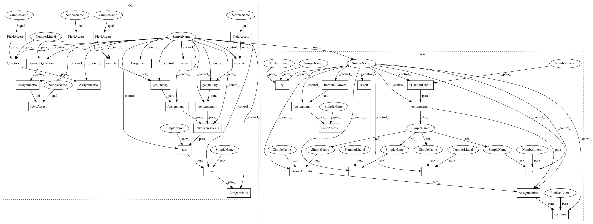

e44bb209a41d9f85a0f115b21b3b150bff65ee66,test/aqua/test_amplitude_estimation.py,TestBernoulli,test_iqae_circuits,#TestBernoulli#Any#,240
Before Change
circuit.ry(angle, q_objective)
if efficient_circuit:
qae.q_factory = BernoulliQFactory(qae.a_factory)
// for power in range(k):
// circuit.ry(2 ** power * angle, q_objective[0])
circuit.ry(2 * k * angle, q_objective[0])
else:
q_factory = QFactory(qae.a_factory, i_objective=0)
for _ in range(k):
q_factory.build(circuit, q_objective)
expected_unitary = self._unitary.execute(circuit).get_unitary()
actual_circuit = qae.construct_circuit(k, measurement=False)
actual_unitary = self._unitary.execute(actual_circuit).get_unitary()
diff = np.sum(np.abs(actual_unitary - expected_unitary))
self.assertAlmostEqual(diff, 0)
@data(True, False)
def test_mlae_circuits(self, efficient_circuit):
Test the circuits constructed for MLAE
After Change
circuit.ry(angle, q_objective)
if efficient_circuit:
qae.grover_operator = BernoulliGrover(prob)
circuit.ry(2 * k * angle, q_objective[0])
else:
oracle = QuantumCircuit(1)
oracle.x(0)
oracle.z(0)
oracle.x(0)
state_preparation = QuantumCircuit(1)
state_preparation.ry(angle, 0)
grover_op = GroverOperator(oracle, state_preparation)
for _ in range(k):
circuit.compose(grover_op, inplace=True)
actual_circuit = qae.construct_circuit(k, measurement=False)
self.assertEqual(Operator(circuit), Operator(actual_circuit))
@data(True, False)
def test_mlae_circuits(self, efficient_circuit):
Test the circuits constructed for MLAE
In pattern: SUPERPATTERN
Frequency: 3
Non-data size: 34
Instances
Project Name: Qiskit/qiskit-aqua
Commit Name: e44bb209a41d9f85a0f115b21b3b150bff65ee66
Time: 2020-09-15
Author: jules.gacon@googlemail.com
File Name: test/aqua/test_amplitude_estimation.py
Class Name: TestBernoulli
Method Name: test_iqae_circuits
Project Name: Qiskit/qiskit-aqua
Commit Name: e44bb209a41d9f85a0f115b21b3b150bff65ee66
Time: 2020-09-15
Author: jules.gacon@googlemail.com
File Name: test/aqua/test_amplitude_estimation.py
Class Name: TestBernoulli
Method Name: test_iqae_circuits
Project Name: Qiskit/qiskit-aqua
Commit Name: e44bb209a41d9f85a0f115b21b3b150bff65ee66
Time: 2020-09-15
Author: jules.gacon@googlemail.com
File Name: test/aqua/test_amplitude_estimation.py
Class Name: TestBernoulli
Method Name: test_qae_circuit
Project Name: Qiskit/qiskit-aqua
Commit Name: e44bb209a41d9f85a0f115b21b3b150bff65ee66
Time: 2020-09-15
Author: jules.gacon@googlemail.com
File Name: test/aqua/test_amplitude_estimation.py
Class Name: TestBernoulli
Method Name: test_mlae_circuits